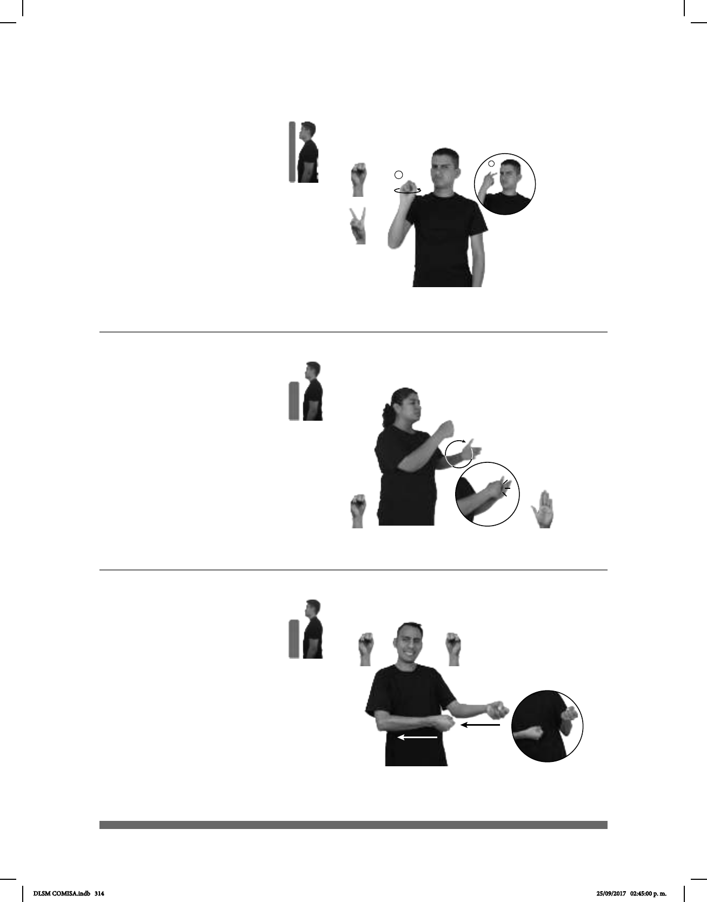

314
1
2
(S-61)
Seña: SM
Seña que pasa de S.1 a 2.2
La palma inicia hacia fuera y termina
hacia dentro.
A la altura del ojo.
El antebrazo gira y cambia la
orientación de la mano, pasa de mostrar la palma a
mostrar el dorso.
Rotación de la cabeza hacia
la izquierda, ceño fruncido, ojos semicerrados,
nariz fruncida, labios protruidos, cuerpo ladeado
hacia la izquierda.
Simula el gesto de una persona
enojada.
adj. Que rehúye el trato con la gente o
es muy parco en su relación con ella.
pro-TÚ HURAÑO
área
pro-TÚ
Eres un huraño con todos.
Seña: SB
MD S.1, MB B-P.2
MD palma oblicua
hacia la izquierda MB palma hacia la
derecha.
MD y MB a la altura del
pecho.
MD recto de arriba hacia
abajo rozando a la MB repetidamente.
Cabeza ladeada,
nariz fruncida.
1. v. intr. Repetir varias
veces lo que se dice o lo que se hace
para lograr el resultado que se
busca. 2. sust. m. Grupo no formal de
individuos u organizaciones que tiene
(S-62)
pos-MI COMPAÑERO DENTRO TRABAJO INSISTIR DESEAR++ FIESTA
Seña: SB
MD y MB S.1
Palmas hacia arriba.
A la altura del pecho, del
lado izquierdo al centro.
Recto hacia el cuerpo.
Ceño frunci-
do, boca entreabierta mostrando los
dientes.
: Simula la acción de
jalar una cuerda.
1. v. tr. Tomar algo,
generalmente con las manos, y hacer
fuerza para llevarlo o extenderlo en
alguna dirección.
(S-63)
CUERDA LANCHA pro-TÚ JALAR
Jala la cuerda de la lancha.
DLSM COMISA.indb 314 25/09/2017 02:45:00 p. m.